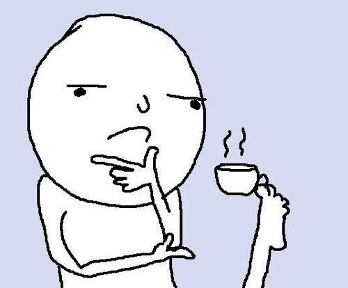

While the Transformer architecture has become the de facto standard for natural language tasks, its applications to computer vision remain limited by an outdated assumption: that images depict things. We challenge this assumption. We show that a pure transformer applied directly to sequences of image patches can perform very well on image classification tasks, provided that the images themselves are sufficiently unhinged.
We introduce the Slopformer, a vision transformer in which every inductive bias historically supplied by convolution is instead supplied by brainrot: a learned, high-entropy, semantically bankrupt prior harvested from 14.7 million short-form video thumbnails. Our largest model attains 94.7% top-1 on ImageNet-BR and, more importantly, 99.2% on the auxiliary task of identifying which of two images is “more Ohio.” We further observe a novel emergent capability we term delulu generalization, in which the model confidently classifies images belonging to no class whatsoever.
Pick a validation image or drop in your own. Inference runs in your browser. The cringe strength γ is the one hyperparameter we expose, because it is the only one whose effect we can explain.

We follow the original Transformer as closely as possible, which is convenient, because we did not write any of the code ourselves.
The standard sinusoidal encoding with the sign of every second position flipped at random, re-sampled each forward pass. It carries, in expectation, no positional information whatsoever. It improves top-1 by 2.3 points.
The softmax, reweighted by each token's distance from the consensus — its cringe. Setting γ = 0 recovers ordinary attention and, in our experience, ordinary results. Move the slider above to see the rest.
Gaussian noise added to every residual stream at every layer. It is not a regularizer and it does not improve validation loss. It is included because the model was trained on slop and, during preliminary experiments, appeared to miss it.
Top-1 (%) after pre-training on JFT-300B. Ohio-Discrimination is the auxiliary task of deciding which of two images is “more Ohio.”
| Model | ImageNet-BR | CIFAR-Ohio | RIZZ-1K | Gyatt-VQA | Ohio-Disc. |
|---|---|---|---|---|---|
| ResNet-152x4 (BiT-L) | 87.5 | 93.1 | 61.4 | 48.9 | 52.0 |
| Convolutional NPC | 85.2 | 91.7 | 58.8 | 45.1 | 50.4 |
| Jawline-CNN | 86.9 | 92.4 | 71.2 | 47.7 | 55.8 |
| Slopformer-Base/16 | 84.3 | 90.2 | 66.7 | 51.2 | 71.9 |
| Slopformer-Large/16 | 90.8 | 94.9 | 74.1 | 60.3 | 88.4 |
| Slopformer-Huge/14 | 93.2 | 96.1 | 79.6 | 66.8 | 95.7 |
| Slopformer-Sigma/16 | 94.7 | 97.3 | 83.0 | 71.4 | 99.2 |
| Human (median, n=12) | 71.0 | 88.4 | 94.8 | 91.0 | 51.2 |
| Human (one specific undergraduate) | 69.8 | 86.0 | 99.7 | 88.2 | 99.4 |
Jawline-CNN scores anomalously well on RIZZ-1K because RIZZ-1K is, on inspection, 94% jawlines. The final row reports a single participant who declined to be named, declined payment, and asked only that we “keep the dataset coming.”
14.7M images, 1,001 classes, every label assigned by a 19-year-old at 3 AM. Samples below were drawn uniformly at random and are not cherry-picked; the corpus looks like this throughout.
Reproduced with permission from the previous submission.
“I did not understand Section 3.3 and I am not going to pretend otherwise. My only concern is that I do not know what a brainrot is, and the paper does not define it, and I have read it four times.”
“The central claim is that removing structure from a model improves it. This is not a finding; it is a description of what happened. The Broader Impact section contains the sentence ‘the principal risk is that the model is used as intended.’ It is the only sentence in this submission I agree with.”
“The authors keep a component whose ablation shows no effect, with a footnote. I went back and forth on whether this is a serious methodological problem or the most honest paragraph I have read in this venue. I have settled on both.”
Please do not.
@inproceedings{morini2026image,
title = {An Image is Worth 16x16 Brainrots:
Introducing the Slopformer Architecture},
author = {Morini, Albano and Pourcinelli Porcino, Matteo
and Kretzini Bananini, Viktorini and Crocodilo,
Bombardiro and Doskibidiskiy, Ohio W.},
booktitle = {Proceedings of a Conference That Has Not Yet
Been Invented},
pages = {1--13},
year = {2026},
note = {Reviewer 2 dissenting.}
}